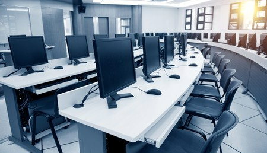
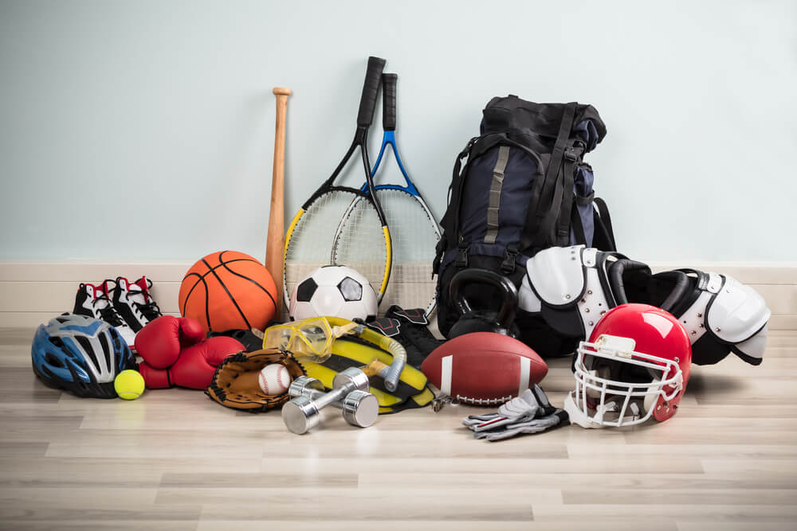
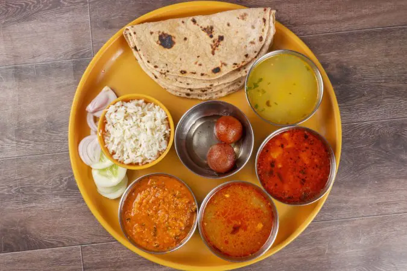

Expectations
1) Computer labs will be well equipped.
2) Sports facilities will present along with all sports equipments.
3) Mess food will be the best as it is a national college so food quality should be good.
4) Teachers are highly qualified and experienced so they teach very well.
Reality
1)Most of the sports equipments are not provided by the college.
2)Due to academics we get less time for some extra activity.
3)Initially when we came to the campus the mess food was good,but with the time quality of mess food decreases.
4)Along with academics ,there are lots of meetings (related to different societies) in weekends are organised.